Introdução
Este manual orienta o uso do módulo Principal do LabMedSys (versão 3.5.1). O Principal concentra o acesso ao sistema, os usuários, os perfis de permissão e os cadastros usados por todos os módulos: ambientes, equipamentos, pessoas jurídicas e outros.
O manual foi escrito a partir das telas do sistema e dos testes realizados no ambiente de teste em 05 e 06/10/2026. As telas e os passos descritos foram executados nesses testes.
A quem se destina
- Administradores do sistema: perfis, usuários e contas de acesso.
- Usuários dos cadastros: ambientes, equipamentos, pessoas jurídicas e demais cadastros.
- Todos os usuários: acesso ao sistema e troca de senha.
Convenções
- Os nomes de botões e campos aparecem em negrito, como na tela.
- Campos marcados com asterisco (*) são obrigatórios.
- As figuras com nomes "TESTE" foram tiradas do ambiente de teste e usam dados fictícios.
Acesso ao sistema
Entrar no sistema
1. Abra o endereço do LabMedSys no navegador.
2. Informe o Usuário (login) e a Senha e clique em ENTRAR.
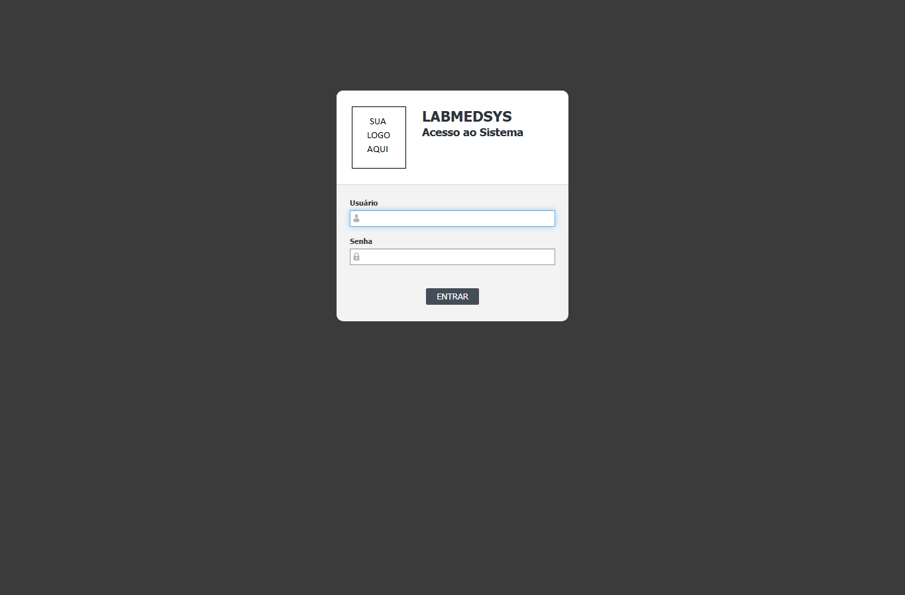
3. Na tela inicial, clique no módulo que deseja usar. Só aparecem para uso os módulos e as telas liberados para o seu perfil.
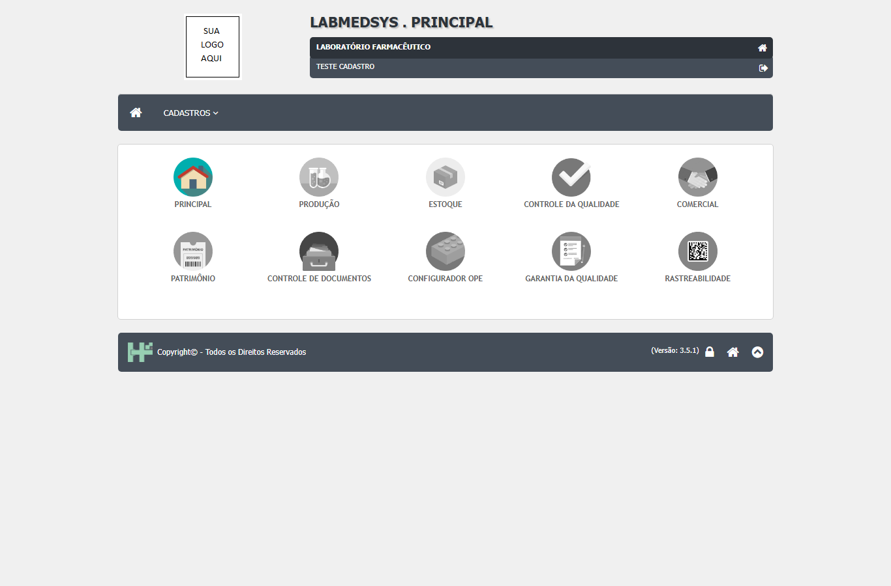
Mensagens de acesso
| Mensagem | O que significa | O que fazer |
|---|---|---|
| Preencha o Usuário / Preencha a Senha | Campo em branco. | Preencha o campo indicado. |
| O usuário informado é inválido! | O login não existe. | Confira o login digitado. |
| A senha está incorreta, você tem mais N tentativa(s)… | Senha errada. | Digite a senha com atenção: no 4º erro seguido a conta é bloqueada. |
| O usuário informado foi bloqueado devido o limite de tentativas… | Conta bloqueada por senhas erradas. | Peça ao administrador um Reset de senha. |
| O usuário informado está inativo! / A conta do usuário informado está inativa! | Usuário ou conta desativados. | Procure o administrador. |
| A data de validade do usuário informado não permite o acesso ao sistema! | Fora do período de validade da conta. | Procure o administrador. |
| Seu perfil não possuí permissão! | O seu perfil não tem nenhuma tela liberada. | Procure o administrador. |
| Sessão Expirada! Faça login novamente. | A sessão terminou por falta de uso. | Entre de novo. |
Atenção
A sessão termina depois de um período sem uso (hoje, entre 10 e 20 minutos). Salve o que estiver fazendo antes de se afastar.
Trocar a senha
A troca é obrigatória no primeiro acesso, depois de um Reset de senha feito pelo administrador e quando a senha vence. Nesses casos, o sistema abre a tela de troca logo após o login.
1. Informe a Senha Atual.
2. Informe a Nova Senha e repita em Confirma Nova Senha.
3. Clique em CONFIRMA e, na pergunta "Confirma a troca de senha?", clique em SIM.
4. Com a mensagem "Senha alterada com sucesso!", o sistema volta à tela de acesso. Entre com a nova senha.
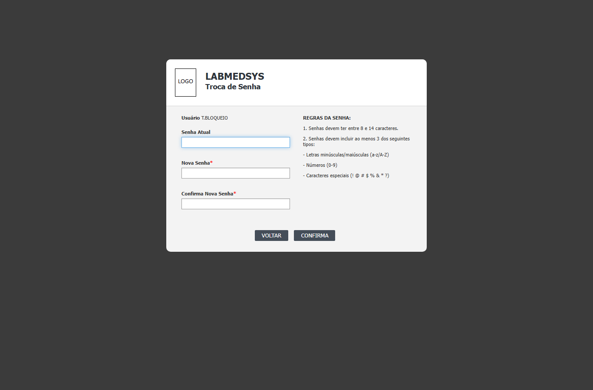
Regras da senha
- Pelo menos 8 caracteres.
- Pelo menos 3 destes tipos: letras minúsculas ou maiúsculas, números (0-9) e caracteres especiais (! @ # $ % & * ?).
- Não pode ser igual às 3 últimas senhas usadas.
- A senha vence no prazo definido na sua conta (normalmente 60 dias). A senha provisória vale 5 dias.
| Mensagem | O que significa |
|---|---|
| Senha atual incorreta! | A senha atual digitada não confere. |
| A estrutura da senha não é permitida! | A nova senha não segue as regras acima. |
| Nova senha e senha anterior não devem ser iguais! | A nova senha é igual à atual. |
| Senha não pode ser igual as 3 últimas senhas utilizadas! | A nova senha repete uma senha recente. |
Sair do sistema
Clique no ícone de saída, no canto superior direito da tela. Ao sair do Principal, feche também as janelas abertas de outros módulos: na versão atual, eles continuam abertos.
Padrão de uso das telas
Todas as telas de cadastro do Principal funcionam do mesmo jeito. Conhecendo este padrão, você consegue usar qualquer cadastro.
Pesquisar
1. No menu, escolha o grupo (ADMINISTRAÇÃO, CADASTROS ou TABELAS DE APOIO) e a tela.
2. Preencha um ou mais filtros (por exemplo, parte da descrição) e clique em PESQUISAR. Sem filtros, a lista traz todos os registros.
3. Use LIMPAR para apagar os filtros.

Atenção
A pesquisa por nome diferencia acentos: para achar "LABORATÓRIO", digite com acento ("laboratório"). Maiúsculas e minúsculas não fazem diferença.
Ícones da lista
| Ícone / botão | Função |
|---|---|
| Incluir (+) | Abre a tela para cadastrar um novo registro. |
| Lápis | Abre o registro para alterar. |
| X vermelho | Exclui o registro (exclusão lógica: ele sai da lista, mas continua guardado). |
| Log | Mostra o histórico de alterações do registro. |
| IMPRIMIR | Gera o relatório da lista, respeitando os filtros. |
| X verde (Excel) | Exporta a lista para planilha. |
Os ícones e botões só aparecem se o seu perfil tiver a permissão correspondente.
Incluir e alterar
1. Clique em Incluir (ou no lápis, para alterar).
2. Preencha os campos. Os marcados com * são obrigatórios.
3. Na alteração, preencha a Justificativa (o motivo da alteração).
4. Clique em SALVAR. O sistema pergunta "Confirma a inclusão do item?" (ou "alteração"): clique em SIM.
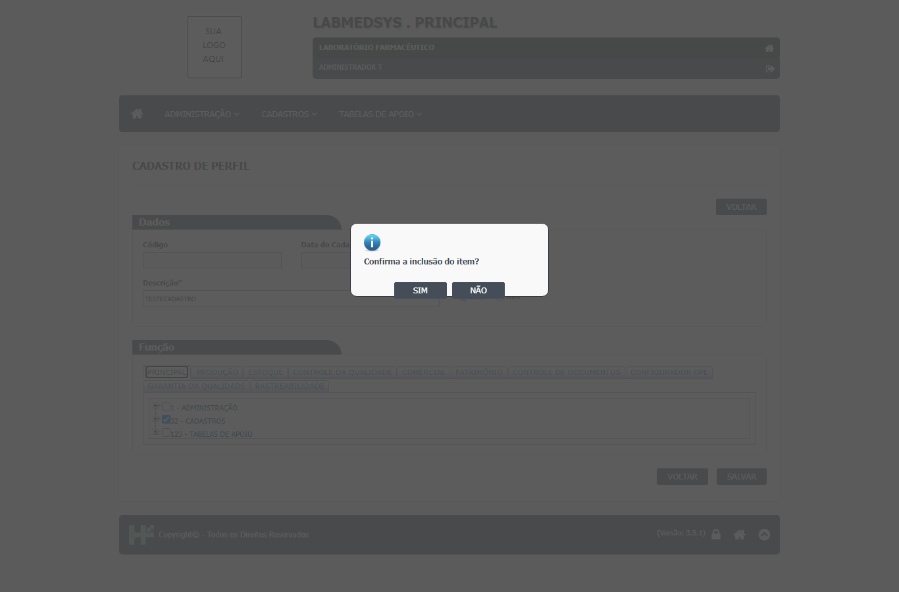
5. Se faltar algum campo obrigatório, o sistema avisa depois do SIM. Corrija e salve de novo.
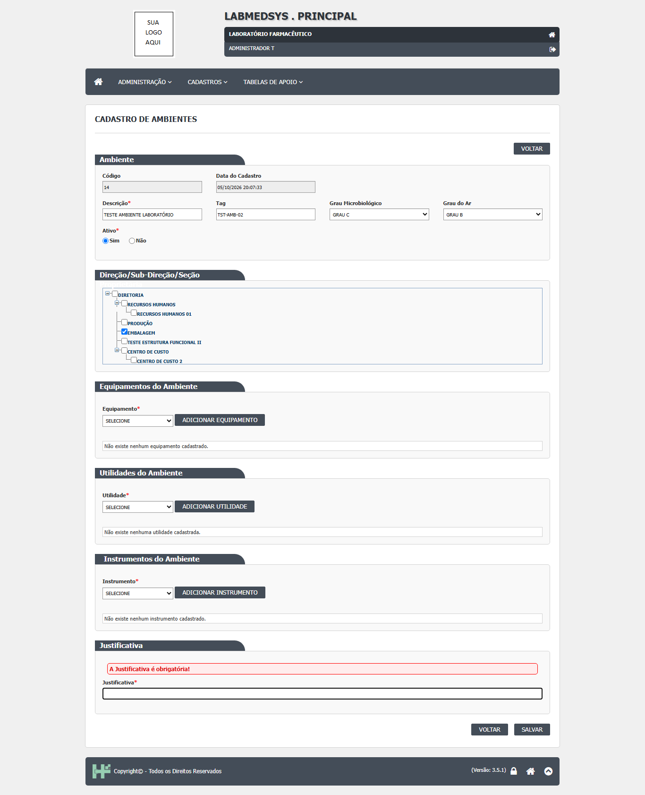
Inativar
Para deixar de usar um registro sem excluí-lo, abra-o, marque Ativo: Não, informe a justificativa e salve. Registros inativos deixam de aparecer nas listas de escolha das outras telas, mas continuam no histórico.
Excluir
1. Na lista, clique no X vermelho do registro.
2. Se a tela pedir, informe a Justificativa da exclusão.
3. Confirme com SIM.
O registro sai da lista, mas continua guardado no banco (lixeira).
Quando a exclusão é recusada
A mensagem "Exclusão inválida, existem referências com outras tabelas." significa que outro cadastro usa o registro (por exemplo, um ponto de água ligado ao ambiente), ou que há itens vinculados na própria tela (por exemplo, tipos de manutenção marcados no equipamento). Remova esses vínculos e tente de novo.
Consultar o histórico (log)
Clique no ícone Log do registro. O histórico mostra cada alteração: campo, valor antigo, valor novo, data, hora, usuário e justificativa.
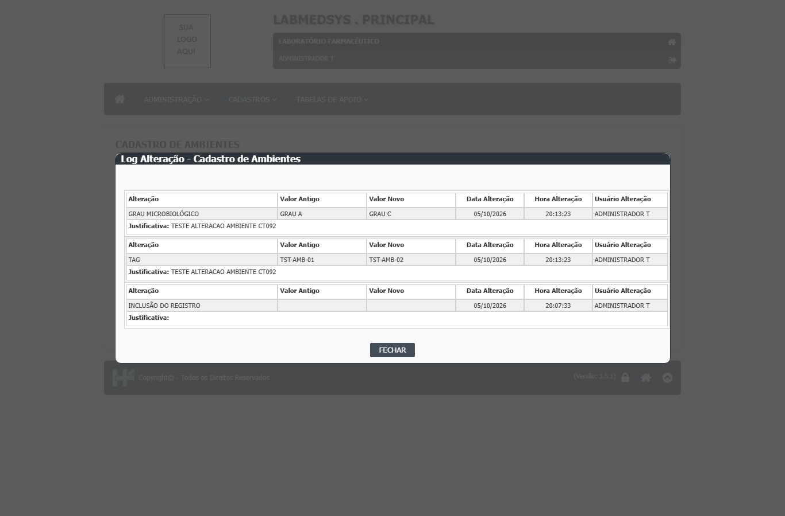
Imprimir e exportar
Depois de pesquisar, clique em IMPRIMIR para abrir o relatório em nova janela, ou no ícone do Excel para baixar a planilha. Os dois trazem só os registros da pesquisa.

Perfil
Menu ADMINISTRAÇÃO › Perfil. Um perfil é um conjunto de permissões: quais telas o usuário pode abrir e o que pode fazer em cada uma. Cada usuário recebe um ou mais perfis e soma as permissões de todos.
Pesquisa
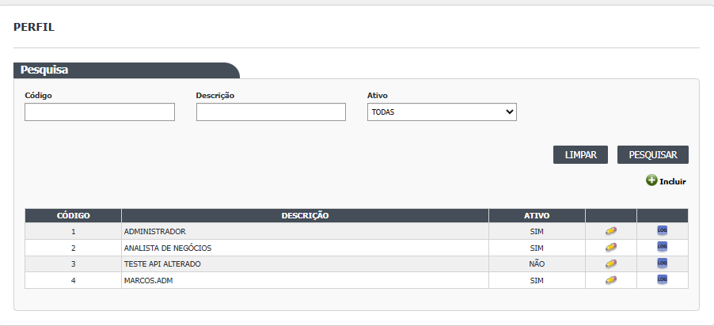
Campos
{{modelo:768}}
Botões
{{modelo:772}}
Cadastro
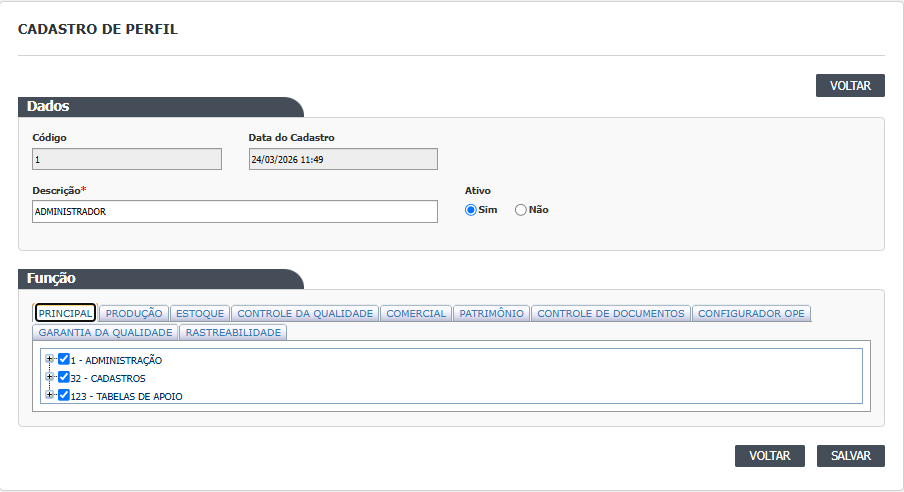
Campos
{{modelo:796}}
Como montar as permissões
1. Informe a Descrição do perfil e marque Ativo: Sim.
2. Na área Função, escolha a aba do módulo (Principal, Produção, Estoque…).
3. Abra a árvore e marque as telas e ações:
- marcar só a tela libera a consulta (o usuário abre e vê, sem gravar);
- marcar uma ação (Incluir, Alterar, Excluir, Imprimir/Excel, Consultar log) marca a tela automaticamente;
- desmarcar a última ação de uma tela desmarca a tela.
4. Clique em SALVAR e confirme com SIM.
Atenção
- Na descrição do perfil, os caracteres
_,',-e/são removidos automaticamente. - O sistema aceita gravar um perfil sem nenhuma tela marcada, mas o usuário com esse perfil não consegue entrar.
- As mudanças de permissão valem a partir do próximo acesso do usuário.
Profissional (usuário)
Menu ADMINISTRAÇÃO › Profissional. Cadastro das pessoas que usam o sistema. A conta de acesso (login e perfis) é criada depois, na tela Conta Usuário.
Pesquisa
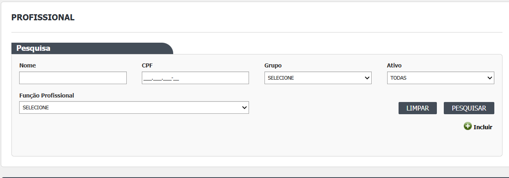
Campos
{{modelo:869}}
Botões
{{modelo:872}}
Cadastro
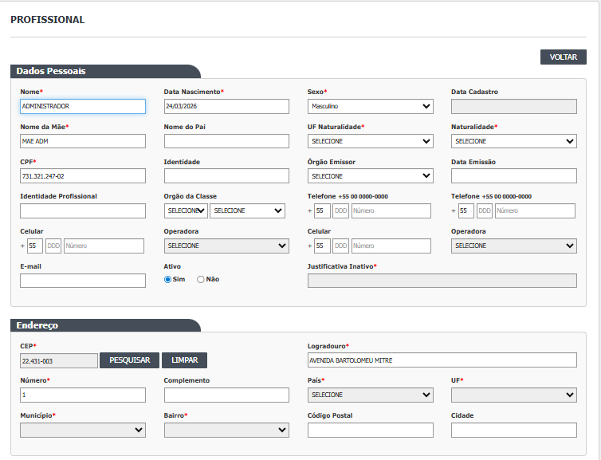
Dados pessoais
{{modelo:895}}
Setor
{{modelo:905}}
Justificativa
{{modelo:914}}
Atenção
- Os campos obrigatórios são cobrados depois da confirmação SIM: nome, data de nascimento, sexo, nome da mãe, UF e naturalidade, CPF, CEP, logradouro, número, bairro e grupo.
- Para inativar, marque Ativo: Não e informe a justificativa: o profissional inativo não consegue entrar no sistema.
- A exclusão abre uma tela própria e exige justificativa.
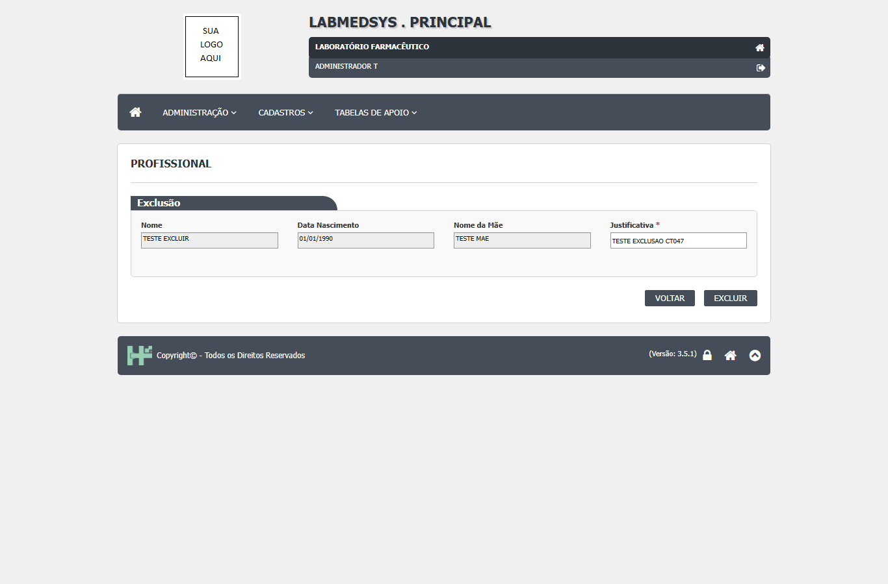
Conta Usuário
Menu ADMINISTRAÇÃO › Conta usuário. Cria e mantém o acesso do profissional: login, validade, prazo da senha e perfis.
Pesquisa
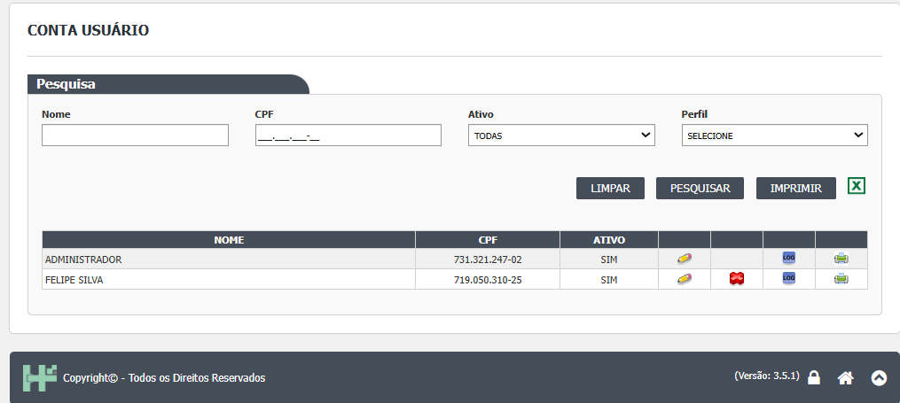
Campos
{{modelo:984}}
Botões
{{modelo:988}}
Cadastro
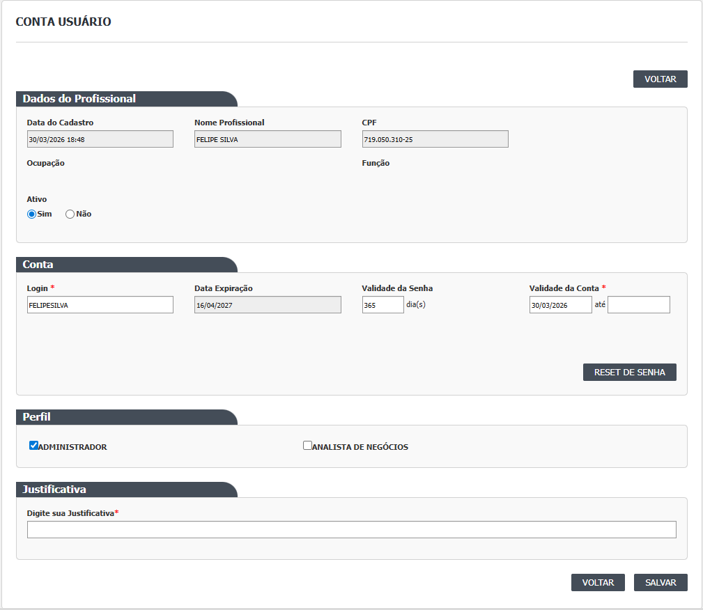
Campos da conta
{{modelo:1023}}
Criar uma conta
1. Na lista, localize o profissional e clique em Incluir na linha dele.
2. Informe o Login (único no sistema; é gravado em maiúsculas).
3. Informe a Validade da Conta (data inicial; a final é opcional) e a Validade da Senha em dias (padrão 60).
4. Marque pelo menos um Perfil.
5. Salve e confirme. O sistema mostra a senha provisória na mensagem de sucesso. Entregue-a ao usuário de forma reservada: ele terá de trocá-la no primeiro acesso.
Reset de senha e desbloqueio
Use o botão RESET DE SENHA quando o usuário esquecer a senha ou for bloqueado por erros. O sistema gera uma nova senha provisória, válida por 5 dias, e o usuário troca a senha no próximo acesso. Com a conta inativa, o botão não aparece: reative a conta antes.
Atenção
- Toda alteração da conta exige justificativa.
- O histórico da conta registra inclusão, ativação, login, validades e perfis incluídos ou retirados.
Ambientes
Menu CADASTROS › Ambientes. Salas e áreas da fábrica, com o grau de contaminação do ar e microbiológico, e os equipamentos, instrumentos e utilidades instalados em cada uma.
Pesquisa
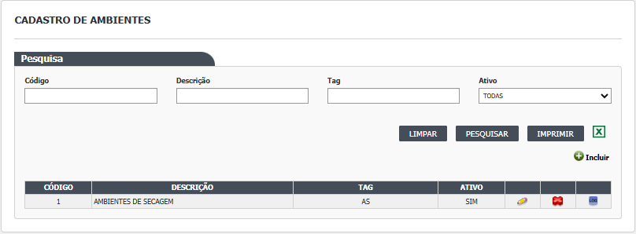
{{modelo:1810}}
Cadastro
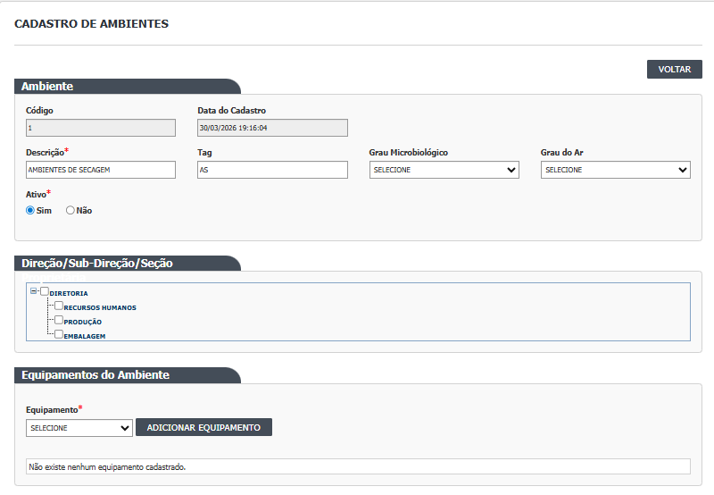
{{modelo:1827}}
Atenção
- Só a Descrição é obrigatória.
- Um ambiente usado por outro cadastro (por exemplo, um ponto de água) não pode ser excluído: inative-o.
- Ambiente inativo deixa de aparecer nas listas de escolha.
Equipamentos
Menu CADASTROS › Equipamentos. Equipamentos da fábrica, com categoria, fabricante, fornecedor e tipos de manutenção.
Pesquisa
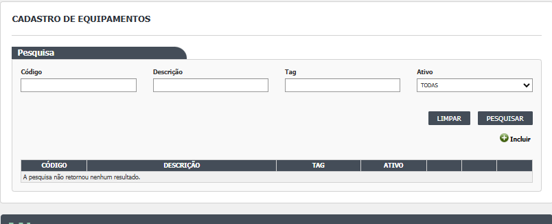
{{modelo:1938}}
Cadastro
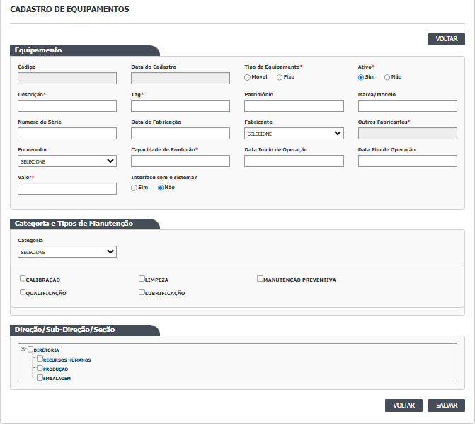
{{modelo:1961}}
Atenção
- Preencha sempre a Categoria: sem ela, a gravação falha e a tela para de responder.
- Fabricante e Fornecedor vêm do cadastro de Pessoa jurídica; só aparecem as ativas.
- Para excluir um equipamento, desmarque antes os tipos de manutenção e os ambientes vinculados.
Pessoa Jurídica
Menu CADASTROS › Pessoa jurídica. Empresas que se relacionam com a fábrica: clientes, fornecedores, transportadoras, fabricantes e a própria empresa. Uma mesma empresa pode ter vários tipos.
Pesquisa
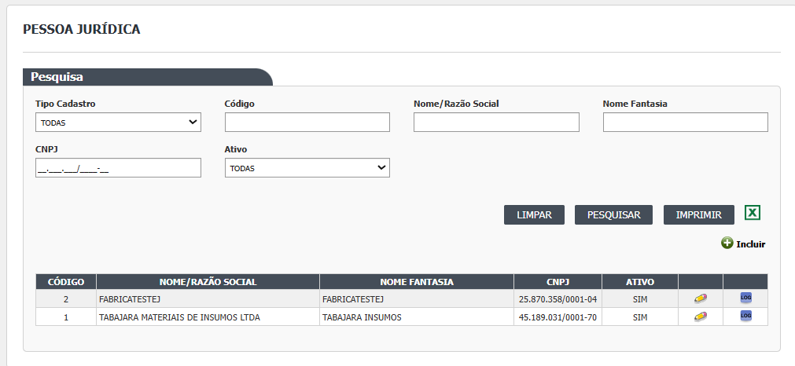
{{modelo:1447}}
Cadastro
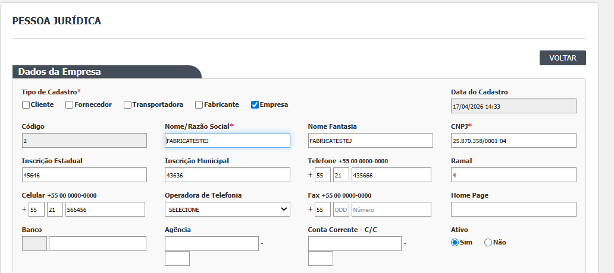
Dados da empresa
{{modelo:1473}}
Endereço
{{modelo:1477}}
Atenção
- O CNPJ é validado e não pode se repetir ("CNPJ inválido!", "CNPJ já cadastrado!").
- Não há exclusão de pessoa jurídica: para deixar de usar, inative. A empresa inativa sai das listas de Fabricante e Fornecedor dos equipamentos.
Demais cadastros
As telas abaixo seguem o mesmo padrão de uso (pesquisar, incluir, alterar, inativar, excluir e consultar o histórico). A descrição dos campos de cada uma está no documento de análise do módulo Principal.
| Menu | Telas |
|---|---|
| ADMINISTRAÇÃO | Notificações padrão, Configurar notificação, Notificações do sistema, Microservices |
| CADASTROS | Instrumentos, Pontos de água, Utensílios, Utilidades, Categoria de equipamento, Centro de custo, Conta contábil, Conta gerencial, Estrutura funcional, Funções profissionais, Grupo de usuários, Local físico |
| TABELAS DE APOIO | Grau de contaminação |